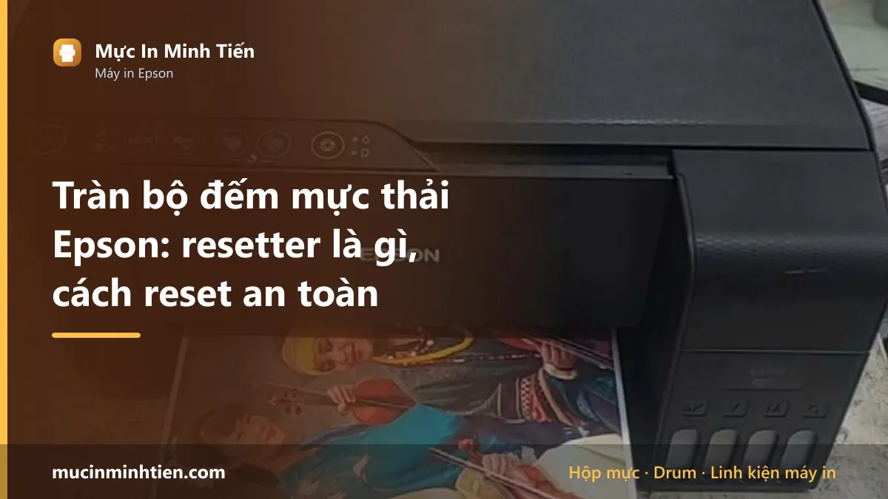
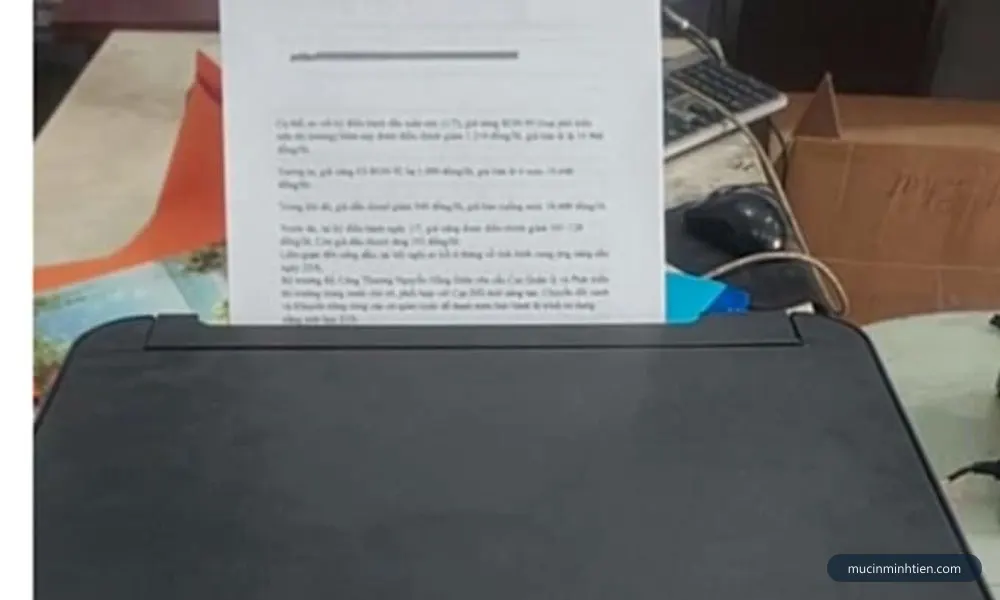
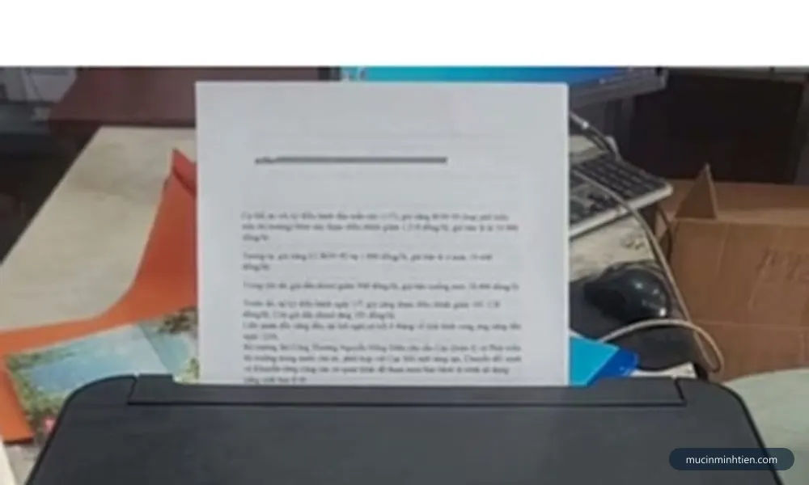
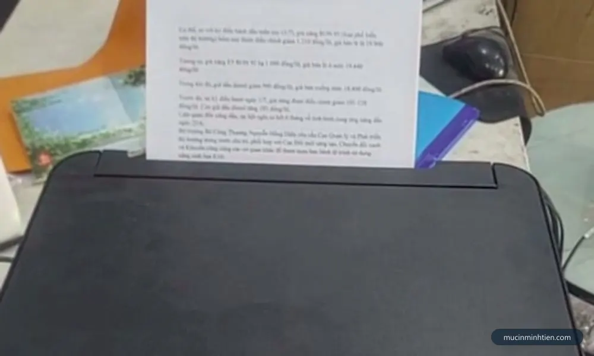
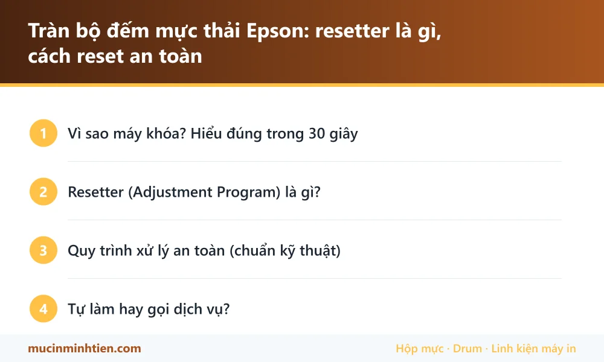

Tràn bộ đếm mực thải Epson: resetter là gì, cách reset an toàn

Một ngày đẹp trời, máy in Epson hiện thông báo "A printer's ink pad is at the end of its service life" hoặc nháy 2 đèn đỏ và ngừng in. Anh em hay gọi là lỗi tràn mực thải — và từ khóa được tìm nhiều nhất là "resetter". Bài này giải thích resetter thực chất là gì, rủi ro của các bản tải trôi nổi, và quy trình xử lý an toàn.
Vì sao máy khóa? Hiểu đúng trong 30 giây
Mỗi lần vệ sinh đầu phun, máy xả mực vào tấm thấm mực thải (ink pad) dưới đáy và cộng dồn một bộ đếm. Đầy ngưỡng → máy tự khóa để mực không tràn ra ngoài. Máy không hỏng — nó đang "đòi bảo dưỡng". Chi tiết về tín hiệu đèn xem bài Epson báo 2 đèn đỏ nhấp nháy; máy Canon có lỗi tương tự mã 5B00.

Resetter (Adjustment Program) là gì?
Là phần mềm dịch vụ của kỹ thuật, có chức năng chính: đưa bộ đếm mực thải về 0 (kèm một số chức năng căn chỉnh khác). Điểm quan trọng:
- Mỗi model một bản riêng — resetter L3210 không chạy cho L1110; L805 dùng bản khác L8050. Chạy sai bản nhẹ thì không nhận máy, nặng thì lỗi thông số.
- Đa số bản "chuẩn" đều bán theo key có phí. Các bản miễn phí trôi nổi thường là: bản bẻ khóa (dính mã độc rất nhiều — loại file này là mồi ưa thích để cài trojan), bản sai phiên bản, hoặc bản khóa vùng.
- Resetter chỉ xóa con số. Mực thải thật vẫn nằm trong máy.

Quy trình xử lý an toàn (chuẩn kỹ thuật)
- Xác nhận đúng bệnh: máy báo ink pad end of service life / 2 đèn đỏ nháy đồng thời, đèn nguồn vẫn xanh.
- Mở đáy máy kiểm tra tấm thấm: tấm mút đẫm mực đen → thay mút mới hoặc giặt sạch phơi khô (thao tác bẩn, chuẩn bị găng tay + báo lót).
- Cân nhắc lắp bình mực thải ngoài: khoan sẵn đường ống dẫn mực xả ra bình ngoài — các lần sau chỉ việc đổ bình, không tháo máy.
- Chạy resetter đúng model → Waste ink pad counter → Check → Initialize → tắt máy bật lại theo hướng dẫn.
- In Nozzle Check xác nhận máy hoạt động bình thường.

Tự làm hay gọi dịch vụ?
Nếu bạn rành máy tính và chấp nhận mua key resetter chính chủ cho model của mình — tự làm được, nhớ làm đủ bước vệ sinh. Còn muốn nhanh gọn và an toàn: kỹ thuật viên Mực In Minh Tiến xử lý tận nơi tại TP.HCM trọn gói: reset đúng bản + vệ sinh/thay tấm thấm + kiểm tra đầu phun, báo giá trước qua Zalo 0915 510 203 khi bạn nhắn model máy.

Câu hỏi thường gặp
Resetter máy in Epson là gì?
Chỉ reset mà không vệ sinh tấm thấm có sao không?
Reset xong máy vẫn báo lỗi thì sao?
Bài viết liên quan
- Epson L3210 nháy 2 đèn đỏ: nguyên nhân và cách xử lý
- Epson L1110 nháy 2 đèn đỏ: nguyên nhân và cách xử lý
- Epson L1210 báo lỗi 2 đèn đỏ: nguyên nhân và cách xử lý
- Epson L3250 báo lỗi 2 đèn đỏ: nguyên nhân và cách xử lý
- Máy in Epson báo lỗi 2 đèn đỏ nhấp nháy: cách xử lý
- Cách vệ sinh đầu phun máy in Epson hết sọc, mất màu
- Lỗi 5B00 máy in Canon: nguyên nhân và cách xử lý